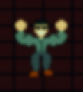

FRAME 014restricted game archive
ПЯТЬ НОЧЕЙ
С БАДИХОРРОРОМ
Небольшая независимая хоррор-игра, сохранённая в виде закрытого ночного терминала. Здесь находится рабочая сборка, архив материалов, восстановленные документы и профиль прохождения, который обновляется непосредственно из сохранения игры.
LOCAL ACCESS GRANTED · OPERATOR
STATUS / ONLINE
BUILD / BBH-2026
ACCESS / LOCAL
SAVE / SCANNING
BUILD / BBH-2026
ACCESS / LOCAL
SAVE / SCANNING
05NIGHT CYCLES
960×620GAME CANVAS
LIVEPLAYABLE BUILD
☆☆☆☆ARCHIVE RATING
NETWORK NOTICE
BUILD BBH-2026 IS CURRENTLY STABLE•ARCHIVE NODE 01 RESPONDING•UNKNOWN ACCESS ATTEMPTS: 03•DO NOT TRUST CAMERA FEED AFTER 05:00•PROFILE SYNC ENABLED•ACHIEVEMENT SERVICE LOCAL / ONLINE EMULATION•LOCAL OBSERVER COUNT NEVER DECREASES
01 // PLAY BUILD
CAMERA FEED / STANDBYREMOTE TERMINAL · NIGHT SHIFT
REMOTE TERMINAL / OFFLINE
READY TO START THE NIGHT SHIFT?
Игровой клиент не загружается автоматически. Нажми PLAY, чтобы запустить игру.
GAME OFFLINE · AWAITING PLAYER
02 // PLAYER RECORD
LOCAL CLIENT / GENERATED IDENTITYOP
OPERATOR PROFILE
NIGHT_OPERATOR
LOCAL CLIENT / UNVERIFIED
RANK 01
CLIENT---- ----
TIMEZONESCANNING
SESSION00:00:00
BUILDBBH-2026
This profile is generated locally. Nothing is uploaded.
LIVE STATUS / PERSONALIZED
PLAYER PRESENCEOBSERVED
LOCAL SAVESCANNING
LAST ACTIONWAITING
THREAT INDEXLOW
No unusual activity has been attached to this client yet.
03 // BUILD DOSSIER
FIELD NOTES / INTERNALNIGHT SHIFT
Обычная рабочая смена, превращённая в локальную игру на выживание. Следи за системой, пока она ещё отвечает.
MODE / SURVIVAL
CAMERA SYSTEM
Переключай точки наблюдения и ищи изменения, которые невозможно заметить одним взглядом.
SYSTEM / LIVE FEED
HIDDEN FILES
Часть истории спрятана за интерфейсом. Не все документы были рассчитаны на публикацию.
ACCESS / PARTIAL
04 // SUPPORT CENTER
HELP DESK / ARCHIVE SERVICEM7
Mila / Night Support
PLAYER CARE · BUILD OPERATIONS
ONLINE · SLA 00:07
MILA · SUPPORTЗдравствуйте. Я Мила, оператор Night Support. Если игра ведёт себя странно — это, скорее всего, уже зарегистрировано. Опишите проблему.
SYSTEM · AUTOВаш текущий локальный профиль будет прикреплён к обращению автоматически. Не отправляйте реальные личные данные.
VERIFY YOU ARE NOT A CAMERAClick the box to continue.
SECURITY CHECK PENDING
CURRENT SUPPORT TICKET
BBH-000000
CLIENT ENVIRONMENT // AUTO-LINKED
LOCAL TIME
--:--:--
TIME ZONE
SCANNING
PLATFORM
SCANNING
BROWSER
SCANNING
DISPLAY
SCANNING
CLIENT ID
GENERATING
DATE LINK PENDING
Operator system identity is sealed from this node. The terminal assigns a local client label from the current environment instead.
LOCAL HANDLE / ----
KNOWN INCIDENTS
NOTE: Support channel operates on the local node only. Tickets stay on this terminal and are not forwarded outside the archive.
05 // ACHIEVEMENT SERVICE
GAMEJOLT / NEWGROUNDS EMULATION · LOCAL PROFILEPLAYER PROFILE
NIGHT SHIFT OPERATOR
SAVE LINK ACTIVE · THE SITE READS THE GAME'S LOCAL SAVE
0 / 0ACHIEVEMENTS SYNCHRONIZED
ARCHIVE-SIDE RECORDS / NOT LINKED TO SAVE FILE0 / 9
CAMPAIGN PROGRESS
0%NIGHT 1
LIVE SAVE MONITOR
waiting for local save…
source: iframe / same-origin
key: bbh_current:bbh_save_v2
waiting for local save…
source: iframe / same-origin
key: bbh_current:bbh_save_v2
NIGHTS PASSED0 / 5
HARD NIGHTLOCKED
NIGHT 7LOCKED
CHALLENGES0 / 25
06 // TERMINAL BULLETIN
LIVE FEED / GENERATED FOR THIS CLIENTOFFICIAL BULLETIN--/--/----
WELCOME, OPERATOR.
The archive has detected a fresh local session. Current public build data is being indexed.
NOTICE / BBH-LOCAL
LOCAL EVENT LOG
--:--:--AWAITING INPUTLOCAL
07 // PARTNER MESSAGE
SPONSORED / ARCHIVE FEEDPAID MESSAGE · VERIFIED BY NO ONE
NEED A NIGHT SHIFT?
Try NightGuard™ — the only flashlight that remembers where you looked last. Now with complimentary camera coverage and absolutely no recording.
PROMO CODE: 06:00 · LIMIT: UNLIMITED · TRUST: 0%
08 // VISUAL ARCHIVE
RECOVERED FRAMES / INTERNAL USEFRAME 027
FILE 001
09 // ARCHIVE LOCKER
RESTRICTED / SOME FILES REQUIRE PROGRESSFILE 001OPEN
EMPLOYEE HANDBOOK
General instructions for night operators. Nothing suspicious here.
FILE 007LOCKED
RED SHIFT REPORT
Unlocks when the archive detects sufficient progress in the game.
FILE 077LOCKED
DO NOT INDEX
This file should appear only after the deepest local flag is detected.
ARCHIVE KEY STATUSNO SPECIAL CLEARANCEProgress through the game to reveal more files.
10 // RECOVERED LORE
FILE FRAGMENTS / 198-ARCHIVEFILE 7ARECOVERED
«НЕ ИСПОЛЬЗОВАТЬ ПОСЛЕ ПЯТОЙ НОЧИ»
На старой копии терминала сохранилась одна короткая инструкция. Автор удалён из метаданных.
Если экран начинает отвечать сам — система больше не показывает камеру. Она показывает то, что считает правильным.DOCUMENT INTEGRITY: 61%
00:00SYSTEM ONLINEREADY
01:42FIRST ANOMALYUNVERIFIED
03:18CAMERA 04 LOSTMISSING
05:00SHIFT TRANSITIONRESTRICTED
05:██NO RECORDCORRUPTED
██:██ENTRY WRITTEN AFTER CLOSINGUNVERIFIED
11 // ABOUT THE BUILD
STUDIO NOTES / PRESS COPYBUDDY HORROR DEVELOPMENT CELLSTATUS / ACTIVE
A very small team. A very bad night shift.
Архив вырос из ночного терминала и со временем собрал вокруг себя скрытые режимы, челленджи и отдельную седьмой ночью. Эта страница оформлена как часть мира игры: часть данных реальна, часть намеренно выглядит подозрительно.
AD
ARCHIVE DESIGNinterface / visual direction
ONLINESD
SYSTEMS / CODEgameplay / nights / save service
LOCALAU
AUDIO UNITsound / ambience / terminal noise
SYNCEDCHANGELOG
12 // FIELD REVIEWS
COMMUNITY ARCHIVE / UNVERIFIED13 // SIGNAL & COMMUNITY
PUBLIC NODE / UNVERIFIED TRANSMISSIONS14 // COMMUNITY BOARD
PLAYER REPORTS / MODERATION PARTIALLEAVE A FIELD COMMENT
Оставьте сообщение в локальном архиве. Публичная синхронизация отключена — запись остаётся на этом терминале. [BBH ARCHIVE // фрагмент снят с локального терминала]
LOCAL BOARD · 0 / 12 ENTRIES
0 / 240
15 // ARCHIVE CONSOLE
LOCAL COMMAND INTERFACEENTER QUERY
ARCHIVE READY.
Type help for available commands.
Type help for available commands.
██ // RESTRICTED NODE
INDEX STATUS / FAILEDARCHIVE / LEVEL ??? / LOCAL OVERRIDE
YOU FOUND
THE WRONG PAGE.
Этот раздел не существует в публичном индексе. Он появился только потому, что ваш клиент выполнил последовательность, которую архив не должен был принимать.
[03:17] REQUEST ACCEPTED
[03:17] PUBLIC INDEX BYPASS
[03:18] OBSERVER COUNT: 01
[03:18] PLEASE DO NOT CONTINUE
[03:17] PUBLIC INDEX BYPASS
[03:18] OBSERVER COUNT: 01
[03:18] PLEASE DO NOT CONTINUE
ACCESS GRANTED / SESSION-SPECIFIC
RECOVERED NODE DATA
EVENT 03:17
Источник запроса не совпадает с зарегистрированным UI.
Источник запроса не совпадает с зарегистрированным UI.
CAMERA 00
Нет изображения. Только временная метка.
Нет изображения. Только временная метка.
OPERATOR
UNRESOLVED
UNRESOLVED
LOCAL CLOCK
--:--:--
--:--:--
WARNING
Не закрывайте вкладку, если хотите увидеть следующий файл.
Не закрывайте вкладку, если хотите увидеть следующий файл.
16 // INCIDENT REPORT
DECLASSIFIED / PARTIALОбъект: ночной терминал наблюдения.
Задача: пережить смену и не дать системе перейти в аварийный режим.
Примечание: часть сведений намеренно оставлена пустой. Некоторые события должны быть обнаружены непосредственно во время прохождения.
[00:00:01] SIGNAL ACQUIRED
[00:00:04] CAMERA NETWORK CONNECTED
[00:00:08] UNLISTED PROCESS FOUND
[00:00:13] NIGHT CYCLE ARMED
[00:00:17] DO NOT LEAVE TERMINAL
[00:00:04] CAMERA NETWORK CONNECTED
[00:00:08] UNLISTED PROCESS FOUND
[00:00:13] NIGHT CYCLE ARMED
[00:00:17] DO NOT LEAVE TERMINAL
ARCHIVE INDEX
✓ playable build
✓ character records
✓ achievement service
✓ local save monitor
? missing camera feed
? night five report
! source integrity compromised
LAST SYNCHRONIZATION
SCANNING
✓ playable build
✓ character records
✓ achievement service
✓ local save monitor
? missing camera feed
? night five report
! source integrity compromised
LAST SYNCHRONIZATION
SCANNING
BE THE FIRST OPERATOR.